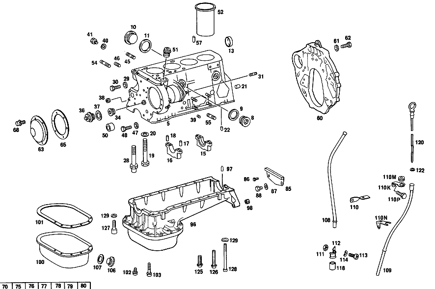

| № | Артикул | Название | Кол. | Примечание | Ограничение |
|---|---|---|---|---|---|
| 8 | N 000908 030002 | - Резьбовая пробка | 4 | ЗАГЛУШКА БОКОВЫХ ЛИТЫХ ОТВЕРСТИЙ | |
| 8 | N 000908 030002 | Резьбовая пробка | 2 | ||
| 8 | N 000908 030002 | - Резьбовая пробка | 1 | ЗАГЛУШКА ЛИТ. ОТВЕРСТИЯ, СТОРОНА СЦЕПЛ. | |
| 9 | N 007603 030100 | - Уплотнительное кольцо | 4 | ЗАГЛУШКА БОКОВЫХ ЛИТЫХ ОТВЕРСТИЙ | |
| 9 | N 007603 030100 | Уплотнительное кольцо | 2 | ||
| 9 | N 007603 030100 | - Уплотнительное кольцо | 1 | ЗАГЛУШКА ЛИТ. ОТВЕРСТИЯ, СТОРОНА СЦЕПЛ. | |
| 10 | N 000908 038000 | - Резьбовая пробка | 3 | ЗАГЛУШКА БОКОВЫХ ЛИТЫХ ОТВЕРСТИЙ | |
| 10 | N 000908 038000 | Резьбовая пробка | 1 | ||
| 11 | N 007603 038100 | - Уплотнительное кольцо | 3 | ЗАГЛУШКА БОКОВЫХ ЛИТЫХ ОТВЕРСТИЙ | |
| 11 | N 007603 038100 | Уплотнительное кольцо | 1 | ||
| 13 | N 000443 034002 | - Запорная крышка | 1 | ЗАГЛУШКА ЛИТ. ОТВЕРСТИЯ, СТОРОНА СЦЕПЛ. | |
| 13 | N 000000 004057 | - Запорная крышка | 1 | ЗАГЛУШКА ЛИТ. ОТВЕРСТИЯ, СТОРОНА СЦЕПЛ. | |
| 13 | N 000443 034002 | - Запорная крышка | 4 | ЗАГЛУШКА БОКОВЫХ ЛИТЫХ ОТВЕРСТИЙ | |
| 13 | N 000000 004057 | - Запорная крышка | 4 | ЗАГЛУШКА БОКОВЫХ ЛИТЫХ ОТВЕРСТИЙ | |
| 15 | A 615 011 02 13 | - КРЫШКА ПОДШ. КОЛЕНВАЛА | 1 | ПОСАДОЧ.ПОДШИПНИК [402] БОЛЬШЕ НЕ ПОСТАВЛЯЕТСЯ | |
| 16 | A 615 011 02 11 | - КРЫШКА ПОДШ. КОЛЕНВАЛА | 4 | ||
| 17 | N 000007 010102 | - Цилиндрический штифт | 5 | ||
| 18 | N 000007 008101 | - Цилиндрический штифт | 5 | ||
| 19 | N 000931 012061 | - Винт | 9 | ||
| 20 | A 121 990 28 40 | - Диск | 10 | ДЛЯ 121 011 00 71 | |
| 20 | A 121 990 28 40 | - Диск | 1 | ДЛЯ 121 011 00 71 | |
| 21 | A 180 991 01 60 | - Штифт | 2 | ||
| 22 | A 186 991 00 55 | - Стопорный штифт | 1 | ||
| 28 | A 615 011 01 71 | - болт | 1 | ||
| 29 | N 007603 008100 | - Уплотнительное кольцо | 1 | ЗАГЛУШКА РЕЗЬБ.ОТВЕРСТИЯ,ТОРЦЕВАЯ СТОРОНА | |
| 30 | N 000933 008123 | - Винт | - | ||
| 30 | N 304017 008008 | - Винт с 6-гранной головкой | 1 | ||
| 31 | N 000939 008134 | - Винт | 2 | ТНВД | |
| 34 | A 000 990 47 12 | - БОЛТ | 2 | ||
| 36 | A 130 180 00 56 | - Резьбовая пробка | 1 | КЛАПАН ИЗБЫТ. ДАВЛ. МАСЛА [235] С ДВИГ. СМ. ГРУППУ 15 | |
| 37 | N 007603 024105 | - Уплотнительное кольцо | 1 | КЛАПАН ИЗБЫТ. ДАВЛ. МАСЛА [235] С ДВИГ. СМ. ГРУППУ 15 | |
| 38 | N 000906 010000 | - Резьбовая пробка | 1 | ||
| 39 | N 900085 007100 | - ШТОК ПРОБКИ | 1 | [402] БОЛЬШЕ НЕ ПОСТАВЛЯЕТСЯ | |
| 40 | A 636 997 02 44 | - Уплотнительное кольцо | 1 | ||
| 41 | N 007604 014106 | - Резьбовая пробка | - | ||
| 41 | N 007604 014110 | - Резьбовая пробка | 1 | ||
| 45 | N 000939 010123 | - Винт | 2 | КРОНШТЕЙН ГЕНЕРАТОРА | |
| 46 | N 000939 008057 | - Винт | 1 | УПОРНЫЙ ЭЛЕМЕНТ УГЛОВОГО РЫЧАГА НА БЛОКЕ ЦИЛ. | |
| 50 | A 615 052 01 50 | - втулка | 1 | ВАЛ ПРОМЕЖУТ.ШЕСТЕРНИ СЗАДИ | |
| 51 | A 615 181 00 26 | - Подшипник | 1 | ПРИВОД МАСЛ.НАСОСА | |
| 52 | A 615 011 05 10 | - ГИЛЬЗА ЦИЛИНДРА | - | ||
| 52 | A 615 011 10 10 | - Гильза цилиндра | 4 | ||
| 54 | N 000939 010123 | Винт | 4 | КРОНШТЕЙН ГЕНЕРАТОРА | |
| 55 | N 000939 010011 | Шпилька | 6 | КРОНШТЕЙН ОПОРЫ ДВИГАТЕЛЯ НА БЛОКЕ ЦИЛИНДРОВ | |
| 57 | N 000007 010100 | Цилиндрический штифт | 2 | ГОЛОВКА БЛОКА ЦИЛИНДРОВ К БЛОКУ ЦИЛИНДРОВ ДВИГ. | |
| 60 | A 115 011 15 45 | ФЛАНЕЦ | - | [250] ИСПОЛЬЗ.СТАР.НОМЕР ДЕТАЛИ ДО ДВИГ.: 940 10/50,20/60 197507 940 12/52,22/62 007504 | |
| 60 | A 615 011 02 45 | Промежуточный фланец | 1 | ||
| 61 | N 000125 010518 | Шайба | - | ||
| 61 | N 000125 010532 | Шайба | 4 | ||
| 62 | N 000933 010164 | Винт | 4 | ||
| 85 | A 111 250 04 56 | ЗАЩИТНАЯ ПАНЕЛЬ | - | [250] ИСПОЛЬЗ.СТАР.НОМЕР ДЕТАЛИ ДО ДВИГ.: 940 10/50,20/60 197507 940 12/52,22/62 007504 | |
| 85 | A 615 250 51 56 | Щиток | 1 | Коробка передач | |
| 86 | N 000933 006103 | Винт | - | ||
| 86 | N 304017 006018 | Винт с 6-гранной головкой | 1 | M6X12 | |
| 86 | N 304017 006018 | Винт с 6-гранной головкой | 2 | M6X12 | |
| 87 | N 000137 010201 | Пружинная шайба | 1 | ||
| 88 | N 000933 010111 | Винт | 1 | ||
| 97 | A 186 991 00 55 | Стопорный штифт | 1 | ||
| 98 | N 900195 010109 | - Резьбовая вставка | 2 | ||
| 100 | A 115 010 04 28 | - Поддон масляный | 1 | НИЖНЯЯ ДЕТАЛЬ | |
| 101 | A 115 014 01 22 | - ПРОКЛАДКА УПЛОТНИТЕЛЬНАЯ | - | ||
| 101 | A 616 014 01 22 | - Уплотнительная прокладка | 1 | ||
| 102 | N 914020 006000 | - Винт с неспадающей шайбой | 14 | НИЖНЯЯ ЧАСТЬ МАСЛ.КАРТЕРА К ВЕРХНЕЙ ЧАСТИ МАСЛ.КАРТЕРА | |
| 103 | N 914020 006006 | - Винт с неспадающей шайбой | 3 | НИЖНЯЯ ЧАСТЬ МАСЛ.КАРТЕРА К ВЕРХНЕЙ ЧАСТИ МАСЛ.КАРТЕРА | |
| 106 | A 130 997 00 32 | - болт | 1 | ||
| 107 | N 915035 000025 | - Уплотнительное кольцо | 1 | ||
| 108 | A 615 018 12 16 | Направляющая трубка | 1 | ||
| 110 | A 615 018 06 40 | ДЕРЖАТЕЛЬ | 1 | [402] БОЛЬШЕ НЕ ПОСТАВЛЯЕТСЯ | |
| 111 | N 000934 006007 | Гайка | 1 | ||
| 112 | A 187 995 00 37 | хомут | 1 | [402] БОЛЬШЕ НЕ ПОСТАВЛЯЕТСЯ | |
| 113 | N 000084 006134 | Винт | 1 | ||
| 114 | N 000137 006204 | Пружинная шайба | 2 | ЗАЩИТНЫЙ ЛИСТ К КАРТЕРУ СЦЕПЛЕНИЯ | |
| 114 | N 000137 006204 | Пружинная шайба | 1 | ||
| 118 | A 621 997 04 82 | ШЛАНГ | 1 | ||
| 120 | A 615 010 11 72 | Маслоизмерительный щуп | 1 | ||
| 122 | A 011 997 53 45 | - Уплотнительное кольцо | 1 | ||
| 125 | N 914020 006000 | Винт с неспадающей шайбой | 16 | ||
| 126 | N 914034 006001 | Винт с неспадающей шайбой | 2 | ||
| 127 | N 000912 008203 | Цилиндрич. винт | 2 | M8X30\-10.9 | |
| 128 | N 000912 008056 | Винт | 2 | ||
| 129 | N 000137 008204 | Пружинная шайба | - | ||
| 129 | N 000137 008212 | Пружинная шайба | 4 | ||
| 150 | A 615 010 39 21 | ГБЦ | 1 | ||
| 151 | N 000906 026001 | - Резьбовая пробка | 3 | ||
| 152 | N 000906 030003 | - Резьбовая пробка | 2 | [402] БОЛЬШЕ НЕ ПОСТАВЛЯЕТСЯ | |
| 153 | N 000906 022000 | - Резьбовая пробка | 1 | ||
| 158 | A 620 016 01 60 | - РАСПРЕДЕЛИТЕЛЬ ВОДЫ | 1 | [126] СИСТ.РЕГУЛИРОВАНИЯ УРОВНЯ КУЗОВА: ДО ДВИГ. 912 10/50,20/60 383295 912 12/52,22/62 041623 913 10/50,20/60 323251 913 12/52,22/62 008911 | |
| 159 | A 621 016 15 60 | - РАСПРЕДЕЛИТЕЛЬ ВОДЫ | 2 | [126] СИСТ.РЕГУЛИРОВАНИЯ УРОВНЯ КУЗОВА: ДО ДВИГ. 912 10/50,20/60 383295 912 12/52,22/62 041623 913 10/50,20/60 323251 913 12/52,22/62 008911 | |
| 160 | A 621 016 13 60 | - РАСПРЕДЕЛИТЕЛЬ ВОДЫ | 3 | [402] БОЛЬШЕ НЕ ПОСТАВЛЯЕТСЯ [126] СИСТ.РЕГУЛИРОВАНИЯ УРОВНЯ КУЗОВА: ДО ДВИГ. 912 10/50,20/60 383295 912 12/52,22/62 041623 913 10/50,20/60 323251 913 12/52,22/62 008911 | |
| 163 | N 000007 008202 | - Цилиндрический штифт | 6 | ||
| 164 | N 000939 008006 | - Шпилька | 3 | ||
| 170 | A 616 053 03 29 | - Направляющая клапана | 4 | ВПУСК | |
| 171 | A 616 053 03 30 | - Направляющая клапана | 4 | ВЫПУСК [402] БОЛЬШЕ НЕ ПОСТАВЛЯЕТСЯ | |
| 172 | N 000939 008130 | - Винт | 2 | ШТУЦЕР СЛИВА ОХЛАЖД.ЖИДКОСТИ | |
| 173 | N 000939 010126 | - Винт | 4 | ВПУСК.КОЛЛЕКТОР И ВЫПУСК.КОЛЛЕКТОР НА ГБЦ | |
| 174 | N 000939 010047 | - Винт | 1 | ВПУСК.КОЛЛЕКТОР И ВЫПУСК.КОЛЛЕКТОР НА ГБЦ | |
| 176 | N 000939 008083 | - Винт | 2 | НАТЯЖИТЕЛЬ ЦЕПИ | |
| 180 | A 621 997 00 12 | Конический штифт | 1 | СМАЗКА ОБВОДН.ШЕСТЕРНИ | |
| 183 | A 621 016 05 29 | Соединительный штуцер | 1 | ДАТЧИК ТЕМПЕР. НА ГБЦ | |
| 183H | A 615 203 02 36 | Соединительный штуцер | 1 | РАЗЪЕМ ОТОПЛЕНИЯ [121] С двигателя: 942 000052 [127] СИСТ.РЕГУЛИРОВАНИЯ УРОВНЯ КУЗОВА: НАЧ. С ДВИГ. 912 10/50,20/60 383296 912 12/52,22/62 041624 913 10/50,20/60 323252 913 12/52,22/62 008912 | |
| 184 | N 007603 030100 | Уплотнительное кольцо | 2 | РАЗЪЕМ ОТОПЛ. И ДАТЧИК ТЕМПЕРАТУРЫ [112] С двигателя: 910 088795 912 10/50,20/60 379191 912 12/52,22/62 041192 913 10/50,20/60 308433 913 12/52,22/62 008609 917 088977 919 001946 936 000215 937 014166 938 005218 939 002973 [121] С двигателя: 942 000052 [127] СИСТ.РЕГУЛИРОВАНИЯ УРОВНЯ КУЗОВА: НАЧ. С ДВИГ. 912 10/50,20/60 383296 912 12/52,22/62 041624 913 10/50,20/60 323252 913 12/52,22/62 008912 | |
| 190 | A 615 010 01 52 | Форкамера | 4 | ||
| 195 | A 615 017 00 03 | Резьбовое кольцо | 4 | ||
| 196 | A 615 017 00 60 | Уплотнительное кольцо | 4 | ТОЛЩИНА 2 MM НОРМАЛЬН. | |
| 200 | A 616 586 03 05 | РЕМКОМПЛЕКТ | - | ||
| 200 | A 616 586 10 05 | К-т распредвала | 1 | ОПОРА РАСПРЕДВАЛА, НОРМАЛЬН. [021] С двигателя: 912 10/50,20/60 151756 912 12/52,22/62 015280 913 10/50,20/60 076538 913 12/52,22/62 002102 [022] С СИСТ.РЕГУЛИРОВКИ УРОВНЯ КУЗОВА:НАЧ. С ДВИГАТЕЛЯ 912 США 10/50,20/60 166609 912 12/52,22/62 016806 913 10/50,20/60 082241 913 12/52,22/62 002244 | |
| 205 | N 000433 008406 | Шайба | 3 | ||
| 206 | N 000934 008013 | Гайка | 3 | ||
| 210 | A 615 016 16 20 | ПРОКЛАДКА ГБЦ | - | ||
| 210 | A 615 016 15 20 | ПРОКЛАДКА ГБЦ | - | ||
| 210 | A 615 016 19 20 | ПРОКЛАДКА ГБЦ | - | ||
| 210 | A 615 016 20 20 | Прокладка ГБЦ | 1 | [112] С двигателя: 910 088795 912 10/50,20/60 379191 912 12/52,22/62 041192 913 10/50,20/60 308433 913 12/52,22/62 008609 917 088977 919 001946 936 000215 937 014166 938 005218 939 002973 [121] С двигателя: 942 000052 [176] ТОЛЬКО ДЛЯ ГБЦ БЕЗ РАСПРЕДЕЛИТЕЛЯ ОЖ [127] СИСТ.РЕГУЛИРОВАНИЯ УРОВНЯ КУЗОВА: НАЧ. С ДВИГ. 912 10/50,20/60 383296 912 12/52,22/62 041624 913 10/50,20/60 323252 913 12/52,22/62 008912 | |
| 211 | N 000433 008406 | Шайба | 3 | ГОЛОВКА БЛОКА ЦИЛИНДРОВ К БЛОКУ ЦИЛИНДРОВ ДВИГ. | |
| 211 | N 000433 008406 | Шайба | 4 | ||
| 212 | N 914020 008007 | Винт с неспадающей шайбой | - | ||
| 212 | N 007984 008013 | Винт | 2 | ГОЛОВКА БЛОКА ЦИЛИНДРОВ К БЛОКУ ЦИЛИНДРОВ ДВИГ. | |
| 213 | A 110 016 04 76 | Диск | 14 | ГОЛОВКА БЛОКА ЦИЛИНДРОВ К БЛОКУ ЦИЛИНДРОВ ДВИГ. | |
| 214 | N 000912 012036 | Винт | 6 | ГОЛОВКА БЛОКА ЦИЛИНДРОВ К БЛОКУ ЦИЛИНДРОВ ДВИГ. [019] С СИСТ.РЕГУЛИРОВКИ УРОВНЯ КУЗОВА 912 10/50,20/60 166608 912 12/52,22/62 016805 913 10/50,20/60 082240 913 12/52,22/62 002243 | |
| 218 | N 000912 012031 | Винт | 4 | ГОЛОВКА БЛОКА ЦИЛИНДРОВ К БЛОКУ ЦИЛИНДРОВ ДВИГ. [019] С СИСТ.РЕГУЛИРОВКИ УРОВНЯ КУЗОВА 912 10/50,20/60 166608 912 12/52,22/62 016805 913 10/50,20/60 082240 913 12/52,22/62 002243 | |
| 221 | N 000912 012024 | Винт | 4 | ГОЛОВКА БЛОКА ЦИЛИНДРОВ К БЛОКУ ЦИЛИНДРОВ ДВИГ. [019] С СИСТ.РЕГУЛИРОВКИ УРОВНЯ КУЗОВА 912 10/50,20/60 166608 912 12/52,22/62 016805 913 10/50,20/60 082240 913 12/52,22/62 002243 | |
| 230 | A 130 070 02 40 | ДЕРЖАТЕЛЬ | - | ||
| 230 | A 130 070 05 40 | ДЕРЖАТЕЛЬ | 1 | ДЛЯ ТРАНСПОРТИРОВКИ [402] БОЛЬШЕ НЕ ПОСТАВЛЯЕТСЯ | |
| 231 | N 000961 012047 | Винт | 1 | ||
| 232 | N 007603 012120 | Уплотнительное кольцо | 1 | ||
| 233 | A 180 016 03 38 | Скоба | 2 | ||
| 234 | A 110 016 04 76 | Диск | 4 | ГОЛОВКА БЛОКА ЦИЛИНДРОВ К БЛОКУ ЦИЛИНДРОВ ДВИГ. | |
| 235 | N 000912 012107 | Винт | 4 | ГОЛОВКА БЛОКА ЦИЛИНДРОВ К БЛОКУ ЦИЛИНДРОВ ДВИГ. | |
| 240 | A 616 180 01 27 | Маслопровод | 1 | ||
| 241 | N 000137 006204 | Пружинная шайба | - | ||
| 242 | N 000912 006041 | Винт | - | [415] ПРИМЕЧ. ПО ЗАМЕНЕ ПРИМЕНИМО ТОЛЬКО ДЛЯ СТОЯЩИХ РЯДОМ ПОЗИЦИЙ | |
| 243 | N 071434 008122 | ХОМУТ | 2 | ||
| 244 | N 000137 005203 | Пружинная шайба | 2 | ||
| 245 | N 914005 005002 | Винт с неспадающей шайбой | 2 | ||
| 248 | A 615 010 14 30 | КРЫШКА ГБЦ | 1 | [402] БОЛЬШЕ НЕ ПОСТАВЛЯЕТСЯ [134] ДО ДВИГ 919 002071,НАЧ.С ДВИГ. 002072 СМ. SA 082262 | |
| 249 | N 000933 008147 | Винт | - | ||
| 249 | N 304017 008021 | Винт с 6-гранной головкой | 2 | M8X20 | |
| 256 | A 000 018 01 80 | ПРОКЛАДКА УПЛОТНИТЕЛЬНАЯ | - | [415] ПРИМЕЧ. ПО ЗАМЕНЕ ПРИМЕНИМО ТОЛЬКО ДЛЯ СТОЯЩИХ РЯДОМ ПОЗИЦИЙ | |
| 256 | A 102 018 00 80 | ПРОКЛАДКА УПЛОТНИТЕЛЬНАЯ | - | ||
| 256 | A 102 018 03 80 | - Уплотнительная прокладка | 1 | 38.5X59 MM; TO 102 018 08 02 [134] ДО ДВИГ 919 002071,НАЧ.С ДВИГ. 002072 СМ. SA 082262 [119] ВХОДИТ В ОБЪЕМ ПОСТАВКИ КРЫШКИ 102 018 03 02 | |
| 256 | A 111 018 00 80 | - Уплотнительная прокладка | 1 | 47.5X59 MM; TO 111 018 03 02 | |
| 260 | A 000 018 07 02 | Крышка наливной горловины | - | ||
| 260 | A 102 018 03 02 | Крышка | - | [414] СТАРУЮ ДЕТАЛЬ УСТАНАВЛИВАТЬ БОЛЬШЕ НЕ РАЗРЕШАЕТСЯ | |
| 260 | A 102 018 04 02 | Крышка наливной горловины | - | ||
| 260 | A 102 018 08 02 | Крышка | - | ||
| 260 | A 111 018 03 02 | Крышка наливной горловины | 1 | ПРОБКА ЗАПРАВОЧНОГО ОТВЕРСТИЯ [402] БОЛЬШЕ НЕ ПОСТАВЛЯЕТСЯ [134] ДО ДВИГ 919 002071,НАЧ.С ДВИГ. 002072 СМ. SA 082262 | |
| 263 | A 615 016 00 80 | Уплотнение крышки КМ | 1 | [134] ДО ДВИГ 919 002071,НАЧ.С ДВИГ. 002072 СМ. SA 082262 | |
| 264 | N 000931 008172 | БОЛТ | 2 | [134] ДО ДВИГ 919 002071,НАЧ.С ДВИГ. 002072 СМ. SA 082262 | |
| 265 | N 000931 008328 | Винт | 1 | [134] ДО ДВИГ 919 002071,НАЧ.С ДВИГ. 002072 СМ. SA 082262 | |
| 268 | N 915035 000003 | Уплотнительное кольцо | 3 | [134] ДО ДВИГ 919 002071,НАЧ.С ДВИГ. 002072 СМ. SA 082262 | |
| 269 | A 615 997 00 72 | ШТУЦЕР | 1 | [402] БОЛЬШЕ НЕ ПОСТАВЛЯЕТСЯ [134] ДО ДВИГ 919 002071,НАЧ.С ДВИГ. 002072 СМ. SA 082262 | |
| 270 | N 007603 018103 | Уплотнительное кольцо | 1 | [134] ДО ДВИГ 919 002071,НАЧ.С ДВИГ. 002072 СМ. SA 082262 | |
| 271 | A 616 010 01 70 | Вентиляционная трубка | - | ||
| 271 | A 617 010 00 70 | Вентиляционная трубка | 1 | [134] ДО ДВИГ 919 002071,НАЧ.С ДВИГ. 002072 СМ. SA 082262 | |
| 272 | A 621 995 01 20 | хомут | 1 | [134] ДО ДВИГ 919 002071,НАЧ.С ДВИГ. 002072 СМ. SA 082262 | |
| 273 | N 912004 006102 | Пружинное кольцо | 1 | [134] ДО ДВИГ 919 002071,НАЧ.С ДВИГ. 002072 СМ. SA 082262 | |
| 274 | N 000912 006004 | Винт | - | M6X12 | |
| 274 | A 000 984 79 29 | болт | 1 | T30\-M6X12 [134] ДО ДВИГ 919 002071,НАЧ.С ДВИГ. 002072 СМ. SA 082262 | |
| 278 | A 615 016 00 34 | Сепаратор | 1 | ||
| 279 | A 615 990 04 63 | ПОЛЫЙ БОЛТ | 1 | [402] БОЛЬШЕ НЕ ПОСТАВЛЯЕТСЯ | |
| 285 | A 615 010 01 70 | Вентиляционная трубка | 1 | ||
| 286 | N 007603 010103 | Уплотнительное кольцо | - | ||
| 286 | N 007603 010110 | Уплотнительное кольцо | 4 | ||
| 287 | A 615 016 04 30 | Трубопровод | 1 | ||
| 290 | A 615 016 00 23 | ПАТРУБОК ВЕНТИЛЯЦИИ | 1 | ||
| 292 | A 615 016 00 81 | Формовый шланг | 1 | КРЫШКА КЛАПАННОГО МЕХАНИЗМА [134] ДО ДВИГ 919 002071,НАЧ.С ДВИГ. 002072 СМ. SA 082262 | |
| 300 | A 615 016 05 30 | ТРУБКА | 1 | ||
| 302 | A 121 094 02 91 | Манжета | 1 | ||
| 303 | A 615 016 01 30 | ТРУБКА | 1 | ||
| A 615 010 03 00 | МОТОР | - | Рулевое управление: ВлевоКоробка передач | ||
| A 615 010 77 00 | МОТОР | - | Рулевое управление: ВлевоКоробка передач | ||
| A 615 010 10 02 | МОТОР | - | Рулевое управление: ВлевоКоробка передач [083] ИСПОЛЬЗ.СТАР.НОМЕР ДЕТАЛИ ДО ДВИГ.: 912 10/50 355367 912 12/52 038535 913 10/50 239222 913 12/52 006641 | ||
| A 615 010 27 02 | МОТОР | 1 | Рулевое управление: ВлевоКоробка передач [697] ДЕТАЛЬ ПОСТАВЛЯЕТСЯ ТОЛЬКО/ИЛИ ТАКЖЕ КАК ЗАП.ЧАСТЬ [003] ДЕТАЛИ ДВИГ.ДЛЯ СИС-МЫ РЕГУЛИРОВКИ УРОВНЯ КУЗОВА СМ. SA 12209 | ||
| A 615 010 05 00 | МОТОР | - | |||
| A 615 010 06 00 | МОТОР | - | |||
| A 615 010 78 00 | МОТОР | - | Рулевое управление: ВлевоАвтоматическая коробка переключения передач [007] МАХОВИК 115 030 07 05 ИСПОЛЬЗОВАТЬ ОТ СНЯТОГО ДВИГАТЕЛЯ | ||
| A 615 010 17 02 | МОТОР | - | Рулевое управление: ВлевоАвтоматическая коробка переключения передач [083] ИСПОЛЬЗ.СТАР.НОМЕР ДЕТАЛИ ДО ДВИГ.: 912 10/50 355367 912 12/52 038535 913 10/50 239222 913 12/52 006641 | ||
| A 615 010 32 02 | МОТОР | 1 | Рулевое управление: ВлевоАвтоматическая коробка переключения передач | ||
| A 615 010 03 00 | МОТОР | - | Рулевое управление: ВправоКоробка передач | ||
| A 615 010 77 00 | МОТОР | - | Рулевое управление: ВправоКоробка передач | ||
| A 615 010 11 02 | МОТОР | 1 | Рулевое управление: ВправоКоробка передач [402] БОЛЬШЕ НЕ ПОСТАВЛЯЕТСЯ [003] ДЕТАЛИ ДВИГ.ДЛЯ СИС-МЫ РЕГУЛИРОВКИ УРОВНЯ КУЗОВА СМ. SA 12209 | ||
| A 615 010 28 44 | МОТОР | 1 | Рулевое управление: ВправоАвтоматическая коробка переключения передач [402] БОЛЬШЕ НЕ ПОСТАВЛЯЕТСЯ | ||
| A 615 010 23 88 | ШОРТБЛОК | 1 | Коробка передач [286] +ЗАКАЗАТЬ: 4 БОЛТА 000912 012029, 8 БОЛТОВ 000912 01210 7, 6 БОЛТОВ 000912 012111 | ||
| A 615 010 29 88 | ШОРТБЛОК | 1 | Автоматическая коробка переключения передач [286] +ЗАКАЗАТЬ: 4 БОЛТА 000912 012029, 8 БОЛТОВ 000912 01210 7, 6 БОЛТОВ 000912 012111 | ||
| A 615 010 13 88 | ШОРТБЛОК | 1 | Автоматическая коробка переключения передач | ||
| A 615 586 03 90 | КОМПЛЕКТ УПЛОТНЕНИЙ | - | |||
| A 615 586 00 90 | КОМПЛЕКТ УПЛОТНЕНИЙ | - | |||
| A 615 586 05 90 | КОМПЛЕКТ УПЛОТНЕНИЙ | - | [012] ИСПОЛЬЗ.СТАР.НОМЕР ДЕТАЛИ ДО ДВИГ.: 912 10/50,20/60 197687 912 12/52,22/62 020300 913 10/50,20/60 104256 913 12/52,22/62 002811 915 008490 | ||
| A 615 586 11 90 | КОМПЛЕКТ УПЛОТНЕНИЙ | - | |||
| A 615 586 54 90 | КОМПЛЕКТ УПЛОТНЕНИЙ | - | МОТОР [143] БОЛЕЕ НЕ ПОСТАВЛЯЕТСЯ, ДЛЯ ЭТОГО КОМПЛЕКТ БЛОКА ЦИЛ. И КОМПЛЕКТ ГБЦ | ||
| A 615 586 52 90 | КОМПЛЕКТ УПЛОТНЕНИЙ | - | |||
| A 615 586 54 90 | КОМПЛЕКТ УПЛОТНЕНИЙ | - | МОТОР [143] БОЛЕЕ НЕ ПОСТАВЛЯЕТСЯ, ДЛЯ ЭТОГО КОМПЛЕКТ БЛОКА ЦИЛ. И КОМПЛЕКТ ГБЦ | ||
| A 615 010 22 08 | БЛОК ЦИЛИНДРОВ | - | [019] С СИСТ.РЕГУЛИРОВКИ УРОВНЯ КУЗОВА 912 10/50,20/60 166608 912 12/52,22/62 016805 913 10/50,20/60 082240 913 12/52,22/62 002243 [239] По двигатель: 913 10/50,20/60 146645 913 12/52,22/62 003982 915 ДО ОКОНЧ.ВЫПУСКА ВМЕСТЕ С:1 К-Т ПОДШ.КОЛЕНВАЛА 6 15 586 39 03 ИЛИ 1 КОМПЛЕКТ ОПОР КОЛЕНВАЛА 615 586 40 03 ИЛИ 1 КОМПЛЕКТ ОПОР КОЛЕНВАЛА 615 586 41 03 ИЛИ 1 КОМПЛЕКТ ОПОР КОЛЕНВАЛА 615 586 42 03 ИЛИ 1 КОМПЛЕКТ ОПОР КОЛЕНВАЛА 615 586 43 03 [241] С двигателя: 913 10/50,20/60 146646 913 12/52,22/62 003983 910,912,917,936,937,938,939,942 ВМЕСТЕ С:1 К-Т ПОДШ.КОЛЕНВАЛА 615 586 34 03 2 КОМПЛЕКТА УПОРН.ШАЙБ 617 586 19 03 ИЛИ 2 КОМПЛ.УПОРН.ШАЙБ 617 586 20 03 ИЛИ 2 К-ТА УПОРНЫХ ШАЙБ 617 586 21 03 ИЛИ 2 КОМПЛЕКТА УПОРН.ШАЙБ 617 586 22 03 ИЛИ 2 КОМПЛЕКТА УПОРНЫХ ШАЙБ 617 586 31 03 | ||
| A 615 010 53 08 | БЛОК ЦИЛИНДРОВ | - | [019] С СИСТ.РЕГУЛИРОВКИ УРОВНЯ КУЗОВА 912 10/50,20/60 166608 912 12/52,22/62 016805 913 10/50,20/60 082240 913 12/52,22/62 002243 [239] По двигатель: 913 10/50,20/60 146645 913 12/52,22/62 003982 915 ДО ОКОНЧ.ВЫПУСКА ВМЕСТЕ С:1 К-Т ПОДШ.КОЛЕНВАЛА 6 15 586 39 03 ИЛИ 1 КОМПЛЕКТ ОПОР КОЛЕНВАЛА 615 586 40 03 ИЛИ 1 КОМПЛЕКТ ОПОР КОЛЕНВАЛА 615 586 41 03 ИЛИ 1 КОМПЛЕКТ ОПОР КОЛЕНВАЛА 615 586 42 03 ИЛИ 1 КОМПЛЕКТ ОПОР КОЛЕНВАЛА 615 586 43 03 [241] С двигателя: 913 10/50,20/60 146646 913 12/52,22/62 003983 910,912,917,936,937,938,939,942 ВМЕСТЕ С:1 К-Т ПОДШ.КОЛЕНВАЛА 615 586 34 03 2 КОМПЛЕКТА УПОРН.ШАЙБ 617 586 19 03 ИЛИ 2 КОМПЛ.УПОРН.ШАЙБ 617 586 20 03 ИЛИ 2 К-ТА УПОРНЫХ ШАЙБ 617 586 21 03 ИЛИ 2 КОМПЛЕКТА УПОРН.ШАЙБ 617 586 22 03 ИЛИ 2 КОМПЛЕКТА УПОРНЫХ ШАЙБ 617 586 31 03 | ||
| A 615 010 90 08 | БЛОК ЦИЛИНДРОВ | - | [237] СМ.ССЫЛКУ 21,22,23 24,239,241 [021] С двигателя: 912 10/50,20/60 151756 912 12/52,22/62 015280 913 10/50,20/60 076538 913 12/52,22/62 002102 [022] С СИСТ.РЕГУЛИРОВКИ УРОВНЯ КУЗОВА:НАЧ. С ДВИГАТЕЛЯ 912 США 10/50,20/60 166609 912 12/52,22/62 016806 913 10/50,20/60 082241 913 12/52,22/62 002244 [023] С двигателя: 910 044701-053244 915 004141-014162 [024] По двигатель: 912 10/50,20/60 191352 912 12/52,22/62 019517 913 10/50,20/60 099402 913 12/52,22/62 002678 [239] По двигатель: 913 10/50,20/60 146645 913 12/52,22/62 003982 915 ДО ОКОНЧ.ВЫПУСКА ВМЕСТЕ С:1 К-Т ПОДШ.КОЛЕНВАЛА 6 15 586 39 03 ИЛИ 1 КОМПЛЕКТ ОПОР КОЛЕНВАЛА 615 586 40 03 ИЛИ 1 КОМПЛЕКТ ОПОР КОЛЕНВАЛА 615 586 41 03 ИЛИ 1 КОМПЛЕКТ ОПОР КОЛЕНВАЛА 615 586 42 03 ИЛИ 1 КОМПЛЕКТ ОПОР КОЛЕНВАЛА 615 586 43 03 [241] С двигателя: 913 10/50,20/60 146646 913 12/52,22/62 003983 910,912,917,936,937,938,939,942 ВМЕСТЕ С:1 К-Т ПОДШ.КОЛЕНВАЛА 615 586 34 03 2 КОМПЛЕКТА УПОРН.ШАЙБ 617 586 19 03 ИЛИ 2 КОМПЛ.УПОРН.ШАЙБ 617 586 20 03 ИЛИ 2 К-ТА УПОРНЫХ ШАЙБ 617 586 21 03 ИЛИ 2 КОМПЛЕКТА УПОРН.ШАЙБ 617 586 22 03 ИЛИ 2 КОМПЛЕКТА УПОРНЫХ ШАЙБ 617 586 31 03 | ||
| A 615 010 15 05 | БЛОК ЦИЛИНДРОВ | - | [238] СМ.ССЫЛКУ 401,27,28,26,239,241 [401] ИСПОЛЬЗОВАТЬ СТАРЫЙ НОМЕР ДЕТАЛИ [027] По двигатель: 912 10/50,20/60 322787 912 12/52,22/62 035296 913 10/50,20/60 184579 913 12/52,22/62 005107 [028] По двигатель: 910 075216 917 054732 915 ДО ОКОНЧАНИЯ ВЫПУСКА [026] С двигателя: 910 053245 915 014163 917 000001 936 000001 937 000001 938 000001 942 000001 [239] По двигатель: 913 10/50,20/60 146645 913 12/52,22/62 003982 915 ДО ОКОНЧ.ВЫПУСКА ВМЕСТЕ С:1 К-Т ПОДШ.КОЛЕНВАЛА 6 15 586 39 03 ИЛИ 1 КОМПЛЕКТ ОПОР КОЛЕНВАЛА 615 586 40 03 ИЛИ 1 КОМПЛЕКТ ОПОР КОЛЕНВАЛА 615 586 41 03 ИЛИ 1 КОМПЛЕКТ ОПОР КОЛЕНВАЛА 615 586 42 03 ИЛИ 1 КОМПЛЕКТ ОПОР КОЛЕНВАЛА 615 586 43 03 [241] С двигателя: 913 10/50,20/60 146646 913 12/52,22/62 003983 910,912,917,936,937,938,939,942 ВМЕСТЕ С:1 К-Т ПОДШ.КОЛЕНВАЛА 615 586 34 03 2 КОМПЛЕКТА УПОРН.ШАЙБ 617 586 19 03 ИЛИ 2 КОМПЛ.УПОРН.ШАЙБ 617 586 20 03 ИЛИ 2 К-ТА УПОРНЫХ ШАЙБ 617 586 21 03 ИЛИ 2 КОМПЛЕКТА УПОРН.ШАЙБ 617 586 22 03 ИЛИ 2 КОМПЛЕКТА УПОРНЫХ ШАЙБ 617 586 31 03 [415] ПРИМЕЧ. ПО ЗАМЕНЕ ПРИМЕНИМО ТОЛЬКО ДЛЯ СТОЯЩИХ РЯДОМ ПОЗИЦИЙ | ||
| A 615 010 66 05 | БЛОК ЦИЛИНДРОВ | - | [239] По двигатель: 913 10/50,20/60 146645 913 12/52,22/62 003982 915 ДО ОКОНЧ.ВЫПУСКА ВМЕСТЕ С:1 К-Т ПОДШ.КОЛЕНВАЛА 6 15 586 39 03 ИЛИ 1 КОМПЛЕКТ ОПОР КОЛЕНВАЛА 615 586 40 03 ИЛИ 1 КОМПЛЕКТ ОПОР КОЛЕНВАЛА 615 586 41 03 ИЛИ 1 КОМПЛЕКТ ОПОР КОЛЕНВАЛА 615 586 42 03 ИЛИ 1 КОМПЛЕКТ ОПОР КОЛЕНВАЛА 615 586 43 03 [241] С двигателя: 913 10/50,20/60 146646 913 12/52,22/62 003983 910,912,917,936,937,938,939,942 ВМЕСТЕ С:1 К-Т ПОДШ.КОЛЕНВАЛА 615 586 34 03 2 КОМПЛЕКТА УПОРН.ШАЙБ 617 586 19 03 ИЛИ 2 КОМПЛ.УПОРН.ШАЙБ 617 586 20 03 ИЛИ 2 К-ТА УПОРНЫХ ШАЙБ 617 586 21 03 ИЛИ 2 КОМПЛЕКТА УПОРН.ШАЙБ 617 586 22 03 ИЛИ 2 КОМПЛЕКТА УПОРНЫХ ШАЙБ 617 586 31 03 | ||
| A 615 010 79 05 | БЛОК ЦИЛИНДРОВ | - | [243] СМ.ССЫЛКУ 25,401,101,239,241 [025] С двигателя: 912 10/50,20/60 191353 912 12/52,22/62 019518 913 10/50,20/60 099403 913 12/52,22/62 002679 [401] ИСПОЛЬЗОВАТЬ СТАРЫЙ НОМЕР ДЕТАЛИ [101] По двигатель: 912 10/50,20/60 374442 912 12/52,22/62 040666 913 10/50,20/60 294007 913 12/52,22/62 008184 910 088794 917 088976 936 000201 937 010827 938 004244 939 000605 942 000031 [239] По двигатель: 913 10/50,20/60 146645 913 12/52,22/62 003982 915 ДО ОКОНЧ.ВЫПУСКА ВМЕСТЕ С:1 К-Т ПОДШ.КОЛЕНВАЛА 6 15 586 39 03 ИЛИ 1 КОМПЛЕКТ ОПОР КОЛЕНВАЛА 615 586 40 03 ИЛИ 1 КОМПЛЕКТ ОПОР КОЛЕНВАЛА 615 586 41 03 ИЛИ 1 КОМПЛЕКТ ОПОР КОЛЕНВАЛА 615 586 42 03 ИЛИ 1 КОМПЛЕКТ ОПОР КОЛЕНВАЛА 615 586 43 03 [241] С двигателя: 913 10/50,20/60 146646 913 12/52,22/62 003983 910,912,917,936,937,938,939,942 ВМЕСТЕ С:1 К-Т ПОДШ.КОЛЕНВАЛА 615 586 34 03 2 КОМПЛЕКТА УПОРН.ШАЙБ 617 586 19 03 ИЛИ 2 КОМПЛ.УПОРН.ШАЙБ 617 586 20 03 ИЛИ 2 К-ТА УПОРНЫХ ШАЙБ 617 586 21 03 ИЛИ 2 КОМПЛЕКТА УПОРН.ШАЙБ 617 586 22 03 ИЛИ 2 КОМПЛЕКТА УПОРНЫХ ШАЙБ 617 586 31 03 | ||
| A 615 010 28 06 | БЛОК ЦИЛИНДРОВ | - | [219] ВМЕСТЕ С:1 КОМПЛЕКТ ПОДШИПН.КОЛЕНВАЛА 615 586 34 03;2 КОМПЛЕКТАУПОРН. ШАЙБ 617 586 19 03 ИЛИ 2 КОМПЛЕКТА УПОРН. ШАЙБ 617 586 20 03 ИЛИ 2 КОМПЛЕКТ УПОРНЫХ ШАЙБ 617 58621 03 ИЛИ 2 КОМПЛЕКТА УПОРН.ШАЙБ 617 586 22 03 ИЛИ 2 КОМПЛЕКТА УПОРНЫХ ШАЙБ 617 586 31 03 | ||
| A 615 010 61 06 | БЛОК ЦИЛИНДРОВ | - | [219] ВМЕСТЕ С:1 КОМПЛЕКТ ПОДШИПН.КОЛЕНВАЛА 615 586 34 03;2 КОМПЛЕКТАУПОРН. ШАЙБ 617 586 19 03 ИЛИ 2 КОМПЛЕКТА УПОРН. ШАЙБ 617 586 20 03 ИЛИ 2 КОМПЛЕКТ УПОРНЫХ ШАЙБ 617 58621 03 ИЛИ 2 КОМПЛЕКТА УПОРН.ШАЙБ 617 586 22 03 ИЛИ 2 КОМПЛЕКТА УПОРНЫХ ШАЙБ 617 586 31 03 | ||
| A 615 010 90 06 | БЛОК ЦИЛИНДРОВ | - | [219] ВМЕСТЕ С:1 КОМПЛЕКТ ПОДШИПН.КОЛЕНВАЛА 615 586 34 03;2 КОМПЛЕКТАУПОРН. ШАЙБ 617 586 19 03 ИЛИ 2 КОМПЛЕКТА УПОРН. ШАЙБ 617 586 20 03 ИЛИ 2 КОМПЛЕКТ УПОРНЫХ ШАЙБ 617 58621 03 ИЛИ 2 КОМПЛЕКТА УПОРН.ШАЙБ 617 586 22 03 ИЛИ 2 КОМПЛЕКТА УПОРНЫХ ШАЙБ 617 586 31 03 | ||
| A 615 010 38 07 | БЛОК ЦИЛИНДРОВ | - | [219] ВМЕСТЕ С:1 КОМПЛЕКТ ПОДШИПН.КОЛЕНВАЛА 615 586 34 03;2 КОМПЛЕКТАУПОРН. ШАЙБ 617 586 19 03 ИЛИ 2 КОМПЛЕКТА УПОРН. ШАЙБ 617 586 20 03 ИЛИ 2 КОМПЛЕКТ УПОРНЫХ ШАЙБ 617 58621 03 ИЛИ 2 КОМПЛЕКТА УПОРН.ШАЙБ 617 586 22 03 ИЛИ 2 КОМПЛЕКТА УПОРНЫХ ШАЙБ 617 586 31 03 | ||
| A 615 010 58 07 | БЛОК ЦИЛИНДРОВ | 1 | |||
| A 615 010 04 23 | - КРЫШКА ПОДШИПНИКА | - | |||
| A 612 010 05 23 | - КРЫШКА ПОДШИПНИКА | - | |||
| A 121 011 00 71 | - БОЛТ | - | [269] ИСПОЛЬЗ.СТАР.НОМЕР ДЕТАЛИ ДО ДВИГ.: 917 089127 918 000139 937 041856 938 013465 939 023012 940 10/50,20/60 070185 940 12/52,22/62 002322 941 10/50,20/60 025165 941 12/52,22/62 003349 942 000201 943 000572 | ||
| N 000939 008083 | - Винт | 1 | |||
| N 000908 018010 | - Резьбовая пробка | 2 | |||
| N 007603 018104 | - Уплотнительное кольцо | 2 | |||
| N 005401 517000 | - Шар | 2 | |||
| A 127 184 01 56 | - ЗАГЛУШКА РЕЗЬБОВАЯ | - | |||
| N 915014 008103 | - ШТОК ПРОБКИ | 1 | [402] БОЛЬШЕ НЕ ПОСТАВЛЯЕТСЯ | ||
| A 621 052 02 50 | - ВТУЛКА | - | [206] ИСПОЛЬЗ.СТАРЫЙ № ДЕТАЛИ ДО ДВИГ.: 918 000385 936 000219 937 043952 938 014499 939 023012 940 10/50,20/60 140322 940 12/52,22/62 004659 | ||
| A 621 180 00 18 | - ПОДШИПНИК | - | |||
| A 615 011 02 10 | - ГИЛЬЗА ЦИЛИНДРА | - | |||
| A 615 011 11 10 | - ГИЛЬЗА ЦИЛИНДРА | 4 | |||
| N 000939 008078 | - Винт | 2 | МАСЛ.КАРТЕР К БЛОКУ ЦИЛ. ДВИГ. | ||
| A 615 586 61 90 | КОМПЛЕКТ УПЛОТНЕНИЙ | - | |||
| A 615 586 54 90 | КОМПЛЕКТ УПЛОТНЕНИЙ | - | |||
| A 615 010 07 80 | КОМПЛЕКТ УПЛОТНЕНИЙ | - | |||
| A 615 010 99 07 | К-т упл. блока цилиндров | 1 | БЛОК ЦИЛИНДРОВ ДВИГАТЕЛЯ | ||
| N 000939 010029 | Шпилька | 2 | КРОНШТЕЙН ОПОРЫ ДВИГАТЕЛЯ НА БЛОКЕ ЦИЛИНДРОВ | ||
| A 115 011 05 45 | ФЛАНЕЦ | - | [270] ИСПОЛЬЗ.СТАР.НОМЕР ДЕТАЛИ ДО ДВИГ.: 910 061419 912 10/50,20/60 244509 912 12/52,22/62 026053 913 10/50,20/60 132263 913 12/52,22/62 003577 915 025109 917 010167 930 000229 | ||
| A 110 011 05 45 | ФЛАНЕЦ | - | |||
| A 115 011 08 45 | ФЛАНЕЦ | - | |||
| A 115 250 00 56 | ЗАЩИТНАЯ ПАНЕЛЬ | 1 | Автоматическая коробка переключения передач [402] БОЛЬШЕ НЕ ПОСТАВЛЯЕТСЯ | ||
| A 001 989 25 20 | Герметизирующий состав | - | |||
| A 001 989 47 20 | ГЕРМЕТИЗИРУЮЩИЙ СОСТАВ | - | |||
| A 001 989 25 20 | Герметизирующий состав | 1 | 100 G. | ||
| A 115 010 05 13 | МАСЛЯНЫЙ КАРТЕР | - | [415] ПРИМЕЧ. ПО ЗАМЕНЕ ПРИМЕНИМО ТОЛЬКО ДЛЯ СТОЯЩИХ РЯДОМ ПОЗИЦИЙ | ||
| A 115 010 12 13 | МАСЛЯНЫЙ КАРТЕР | - | |||
| A 115 010 16 13 | МАСЛЯНЫЙ КАРТЕР | - | |||
| A 115 010 18 13 | МАСЛЯНЫЙ КАРТЕР | - | |||
| A 115 010 17 13 | МАСЛЯНЫЙ КАРТЕР | - | |||
| A 115 010 18 13 | МАСЛЯНЫЙ КАРТЕР | 1 | |||
| A 115 010 01 28 | - МАСЛЯНЫЙ КАРТЕР | - | |||
| A 115 010 02 28 | - МАСЛЯНЫЙ КАРТЕР | - | |||
| A 115 010 03 28 | - МАСЛЯНЫЙ КАРТЕР | - | |||
| A 136 997 12 30 | - ЗАГЛУШКА РЕЗЬБОВАЯ | - | |||
| N 007604 012102 | - Резьбовая пробка | - | [415] ПРИМЕЧ. ПО ЗАМЕНЕ ПРИМЕНИМО ТОЛЬКО ДЛЯ СТОЯЩИХ РЯДОМ ПОЗИЦИЙ [271] ИСПОЛЬЗОВАТЬ СТАРЫЙ НОМЕР ДЕТАЛИ НАЧ. С ДВИГ. 912 10/50,20/60 377276-384716 912 12/52,22/62 041001-041801 913 10/50,20/60 302239-331915 913 12/52,22/62 008432-009104 914 10/50,20/60 000001-006290 914 12/52,22/62 000001-000770 917 088972-089046 936 000001-000214 936 000215 937 012796-022648 939 001676-012352 940 10/50,20/60 000001-014004 940 12/52,22/62 000001-000644 942 000001-000091 | ||
| A 123 997 01 30 | - ЗАГЛУШКА РЕЗЬБОВАЯ | - | |||
| A 123 997 04 30 | - ЗАГЛУШКА РЕЗЬБОВАЯ | - | |||
| A 002 997 34 30 | - Резьбовая пробка | 1 | |||
| N 007603 012110 | - Уплотнительное кольцо | 1 | |||
| A 621 018 08 16 | - НАПРАВЛ. ТРУБКА | - | |||
| A 114 018 01 16 | - НАПРАВЛ. ТРУБКА | 1 | |||
| A 615 010 01 66 | - НАПРАВЛ. ТРУБКА | - | |||
| A 615 018 05 16 | - НАПРАВЛ. ТРУБКА | - | |||
| A 615 018 08 16 | НАПРАВЛ. ТРУБКА | - | |||
| A 615 010 01 40 | ДЕРЖАТЕЛЬ | 1 | [402] БОЛЬШЕ НЕ ПОСТАВЛЯЕТСЯ | ||
| A 615 018 02 40 | ДЕРЖАТЕЛЬ | - | |||
| A 615 018 05 40 | ДЕРЖАТЕЛЬ | - | |||
| A 833 997 02 81 | втулка | 1 | |||
| A 115 010 05 72 | ЩУП МАСЛЯНЫЙ | - | |||
| A 115 010 07 72 | ЩУП МАСЛЯНЫЙ | 1 | |||
| A 615 010 04 72 | ЩУП МАСЛЯНЫЙ | - | |||
| A 136 997 00 41 | - УПЛОТНИТ. КОЛЬЦО | 1 | [402] БОЛЬШЕ НЕ ПОСТАВЛЯЕТСЯ | ||
| N 000934 008013 | Гайка | 2 | |||
| A 615 010 17 20 | ГОЛОВКА БЛОКА ЦИЛИНДРОВ | - | |||
| A 615 010 40 20 | ГОЛОВКА БЛОКА ЦИЛИНДРОВ | - | [273] ИСПОЛЬЗ.СТАР.НОМЕР ДЕТАЛИ ДО ДВИГ.: 910 049856 912 10/50,20/60 174653 912 12/52,22/62 017888 913 10/50,20/60 091273 913 12/52,22/62 002446 915 009914 | ||
| A 615 010 76 20 | ГОЛОВКА БЛОКА ЦИЛИНДРОВ | - | [003] ДЕТАЛИ ДВИГ.ДЛЯ СИС-МЫ РЕГУЛИРОВКИ УРОВНЯ КУЗОВА СМ. SA 12209 [021] С двигателя: 912 10/50,20/60 151756 912 12/52,22/62 015280 913 10/50,20/60 076538 913 12/52,22/62 002102 | ||
| A 615 010 40 21 | ГОЛОВКА БЛОКА ЦИЛИНДРОВ | - | [112] С двигателя: 910 088795 912 10/50,20/60 379191 912 12/52,22/62 041192 913 10/50,20/60 308433 913 12/52,22/62 008609 917 088977 919 001946 936 000215 937 014166 938 005218 939 002973 | ||
| A 615 010 45 21 | ГОЛОВКА БЛОКА ЦИЛИНДРОВ | - | |||
| A 615 010 57 21 | ГОЛОВКА БЛОКА ЦИЛИНДРОВ | - | [274] ИСПОЛЬЗОВАТЬ СТАРЫЙ НОМЕР ДЕТАЛИ НАЧ. С ДВИГ. 912 10/50,20/60 381621 912 12/52,22/62 041410 913 10/50,20/60 361940 913 12/52,22/62 008813 917 089020-089127 918 000179-000398 936 000215-000219 937 018265-043279 938 005859-014499 939 006472-023012 940 10/50,20/60 000001-120518 940 12/52,22/62 000001-003983 941 10/50,20/60 000001-043331 941 12/52,22/62 000001-005735 943 000001-000572 944 000001-000534 | ||
| A 615 010 96 21 | ГОЛОВКА БЛОКА ЦИЛИНДРОВ | - | [403] НЕ УСТАНОВЛЕНО | ||
| N 000443 018000 | - Запорная крышка | 4 | [112] С двигателя: 910 088795 912 10/50,20/60 379191 912 12/52,22/62 041192 913 10/50,20/60 308433 913 12/52,22/62 008609 917 088977 919 001946 936 000215 937 014166 938 005218 939 002973 | ||
| A 621 053 15 29 | - НАПРАВЛЯЮЩАЯ КЛАПАНА | - | [276] ИСПОЛЬЗ.СТАР.НОМЕР ДЕТАЛИ ДО ДВИГ.: 917 089127 918 000398 936 000219 937 043279 938 014499 939 023012 940 10/50,20/60 120518 940 12/52,22/62 003983 941 10/50,20/60 043331 941 12/52,22/62 005735 942 000211 943 000572 944 000534 | ||
| A 621 053 16 29 | - НАПРАВЛЯЮЩАЯ КЛАПАНА | - | [276] ИСПОЛЬЗ.СТАР.НОМЕР ДЕТАЛИ ДО ДВИГ.: 917 089127 918 000398 936 000219 937 043279 938 014499 939 023012 940 10/50,20/60 120518 940 12/52,22/62 003983 941 10/50,20/60 043331 941 12/52,22/62 005735 942 000211 943 000572 944 000534 | ||
| A 616 053 04 29 | - Направляющая клапана | 4 | РЕМОНТ.ИСПОЛНЕНИЕ;ВПУСК 14.20 MM | ||
| A 621 053 36 30 | - НАПРАВЛЯЮЩАЯ КЛАПАНА | - | [276] ИСПОЛЬЗ.СТАР.НОМЕР ДЕТАЛИ ДО ДВИГ.: 917 089127 918 000398 936 000219 937 043279 938 014499 939 023012 940 10/50,20/60 120518 940 12/52,22/62 003983 941 10/50,20/60 043331 941 12/52,22/62 005735 942 000211 943 000572 944 000534 | ||
| A 621 053 37 30 | - НАПРАВЛЯЮЩАЯ КЛАПАНА | - | [276] ИСПОЛЬЗ.СТАР.НОМЕР ДЕТАЛИ ДО ДВИГ.: 917 089127 918 000398 936 000219 937 043279 938 014499 939 023012 940 10/50,20/60 120518 940 12/52,22/62 003983 941 10/50,20/60 043331 941 12/52,22/62 005735 942 000211 943 000572 944 000534 | ||
| A 616 053 04 30 | - Направляющая клапана | 4 | РЕМОНТ.ИСПОЛНЕНИЕ;ВЫПУСК 14.20 MM [402] БОЛЬШЕ НЕ ПОСТАВЛЯЕТСЯ | ||
| N 000939 010123 | - Винт | 1 | ВПУСК.КОЛЛЕКТОР И ВЫПУСК.КОЛЛЕКТОР НА ГБЦ | ||
| A 621 997 00 12 | - Конический штифт | 1 | СМАЗКА ОБВОДН.ШЕСТЕРНИ | ||
| A 615 586 01 90 | КОМПЛЕКТ УПЛОТНЕНИЙ | - | |||
| A 615 586 06 90 | КОМПЛЕКТ УПЛОТНЕНИЙ | - | |||
| A 615 586 57 90 | КОМПЛЕКТ УПЛОТНЕНИЙ | - | |||
| A 615 010 05 80 | КОМПЛЕКТ УПЛОТНЕНИЙ | - | |||
| A 615 010 98 21 | К-т упл. ГБЦ | 1 | ГОЛОВКА БЛОКА ЦИЛИНДРОВ [402] БОЛЬШЕ НЕ ПОСТАВЛЯЕТСЯ [126] СИСТ.РЕГУЛИРОВАНИЯ УРОВНЯ КУЗОВА: ДО ДВИГ. 912 10/50,20/60 383295 912 12/52,22/62 041623 913 10/50,20/60 323251 913 12/52,22/62 008911 [129] ТОЛЬКО ДЛЯ ГБЦ С РАСПРЕДЕЛИТЕЛЕМ ОЖ | ||
| A 615 586 53 90 | КОМПЛЕКТ УПЛОТНЕНИЙ | - | |||
| A 615 586 62 90 | КОМПЛЕКТ УПЛОТНЕНИЙ | - | |||
| A 615 010 06 80 | КОМПЛЕКТ УПЛОТНЕНИЙ | 1 | ГОЛОВКА БЛОКА ЦИЛИНДРОВ [126] СИСТ.РЕГУЛИРОВАНИЯ УРОВНЯ КУЗОВА: ДО ДВИГ. 912 10/50,20/60 383295 912 12/52,22/62 041623 913 10/50,20/60 323251 913 12/52,22/62 008911 [129] ТОЛЬКО ДЛЯ ГБЦ С РАСПРЕДЕЛИТЕЛЕМ ОЖ | ||
| A 615 586 58 90 | КОМПЛЕКТ УПЛОТНЕНИЙ | - | [112] С двигателя: 910 088795 912 10/50,20/60 379191 912 12/52,22/62 041192 913 10/50,20/60 308433 913 12/52,22/62 008609 917 088977 919 001946 936 000215 937 014166 938 005218 939 002973 [121] С двигателя: 942 000052 [200] ИСПОЛЬЗ.СТАРЫЙ № ДЕТАЛИ ДО ДВИГ.: 917 089127 918 000277 936 000219 937 043257 938 014499 939 023012 940 10/50,20/60 098697 940 12/52,22/62 003274 941 10/50,20/60 034866 941 12/52,22/62 004765 942 000211 943 000572 944 000360 [127] СИСТ.РЕГУЛИРОВАНИЯ УРОВНЯ КУЗОВА: НАЧ. С ДВИГ. 912 10/50,20/60 383296 912 12/52,22/62 041624 913 10/50,20/60 323252 913 12/52,22/62 008912 | ||
| A 615 586 60 90 | КОМПЛЕКТ УПЛОТНЕНИЙ | - | [112] С двигателя: 910 088795 912 10/50,20/60 379191 912 12/52,22/62 041192 913 10/50,20/60 308433 913 12/52,22/62 008609 917 088977 919 001946 936 000215 937 014166 938 005218 939 002973 [121] С двигателя: 942 000052 [200] ИСПОЛЬЗ.СТАРЫЙ № ДЕТАЛИ ДО ДВИГ.: 917 089127 918 000277 936 000219 937 043257 938 014499 939 023012 940 10/50,20/60 098697 940 12/52,22/62 003274 941 10/50,20/60 034866 941 12/52,22/62 004765 942 000211 943 000572 944 000360 [127] СИСТ.РЕГУЛИРОВАНИЯ УРОВНЯ КУЗОВА: НАЧ. С ДВИГ. 912 10/50,20/60 383296 912 12/52,22/62 041624 913 10/50,20/60 323252 913 12/52,22/62 008912 | ||
| A 615 586 65 90 | КОМПЛЕКТ УПЛОТНЕНИЙ | - | [232] СМ. ССЫЛКУ:112,121,127,109,230,176 [112] С двигателя: 910 088795 912 10/50,20/60 379191 912 12/52,22/62 041192 913 10/50,20/60 308433 913 12/52,22/62 008609 917 088977 919 001946 936 000215 937 014166 938 005218 939 002973 [121] С двигателя: 942 000052 [127] СИСТ.РЕГУЛИРОВАНИЯ УРОВНЯ КУЗОВА: НАЧ. С ДВИГ. 912 10/50,20/60 383296 912 12/52,22/62 041624 913 10/50,20/60 323252 913 12/52,22/62 008912 [109] С двигателя: 919 001946 [230] ИСПОЛЬЗ.СТАР.НОМЕР ДЕТАЛИ ДО ДВИГ.: 918 000444 936 000219 937 043952 938 014499 939 023012 940 10/50,20/60 142197 940 12/52,22/62 004748 [176] ТОЛЬКО ДЛЯ ГБЦ БЕЗ РАСПРЕДЕЛИТЕЛЯ ОЖ | ||
| A 615 586 15 90 | КОМПЛЕКТ УПЛОТНЕНИЙ | - | |||
| A 615 586 17 90 | КОМПЛЕКТ УПЛОТНЕНИЙ | - | |||
| A 615 010 00 80 | КОМПЛЕКТ УПЛОТНЕНИЙ | - | |||
| A 615 010 97 21 | К-т упл. ГБЦ | 1 | ГОЛОВКА БЛОКА ЦИЛИНДРОВ [112] С двигателя: 910 088795 912 10/50,20/60 379191 912 12/52,22/62 041192 913 10/50,20/60 308433 913 12/52,22/62 008609 917 088977 919 001946 936 000215 937 014166 938 005218 939 002973 [121] С двигателя: 942 000052 [176] ТОЛЬКО ДЛЯ ГБЦ БЕЗ РАСПРЕДЕЛИТЕЛЯ ОЖ [127] СИСТ.РЕГУЛИРОВАНИЯ УРОВНЯ КУЗОВА: НАЧ. С ДВИГ. 912 10/50,20/60 383296 912 12/52,22/62 041624 913 10/50,20/60 323252 913 12/52,22/62 008912 | ||
| A 114 997 01 72 | ШТУЦЕР | - | [277] ИСПОЛЬЗ.СТАР.НОМЕР ДЕТАЛИ ДО ДВИГ.: 912 10/50,20/60 323904-379190 912 12/52,22/62 035508-041191 913 10/50,20/60 185881-308432 913 12/52,22/62 005131-008608 917 088976 919 001945 936 000214 937 014165 938 005217 939 002972 942 000051 С РЕГУЛИР. УРОВНЯ 912 10/50,20/60 383295 912 12/52,22/62 041623 913 10/50,20/60 323251 913 12/52,22/62 008911 | ||
| A 615 997 04 72 | Штуцер | 1 | ДАТЧИК ТЕМПЕР. НА ГБЦ | ||
| N 007603 032100 | Уплотнительное кольцо | 1 | |||
| A 636 017 03 03 | КОЛЬЦО РЕЗЬБОВОЕ | - | |||
| A 615 017 01 60 | Уплотнительное кольцо | 4 | ТОЛЩИНА 2,3 MM РЕМ.РАЗМЕР | ||
| A 615 017 02 60 | Уплотнительное кольцо | 4 | ТОЛЩИНА 2,6 MM РЕМ.РАЗМЕР | ||
| A 615 017 03 60 | Уплотнительное кольцо | 4 | ТОЛЩИНА 2,9 MM РЕМ.РАЗМЕР | ||
| A 621 050 07 97 | ПОДШИПНИК | - | [019] С СИСТ.РЕГУЛИРОВКИ УРОВНЯ КУЗОВА 912 10/50,20/60 166608 912 12/52,22/62 016805 913 10/50,20/60 082240 913 12/52,22/62 002243 | ||
| A 615 586 01 05 | РЕМКОМПЛЕКТ | - | |||
| A 621 050 08 97 | ПОДШИПНИК | - | [019] С СИСТ.РЕГУЛИРОВКИ УРОВНЯ КУЗОВА 912 10/50,20/60 166608 912 12/52,22/62 016805 913 10/50,20/60 082240 913 12/52,22/62 002243 | ||
| A 615 586 02 05 | РЕМКОМПЛЕКТ | - | |||
| A 616 586 04 05 | РЕМКОМПЛЕКТ | - | |||
| A 616 586 11 05 | ремкомплект | 1 | ОПОРА РАСПРЕДВАЛА НА 0,1 MM УЖЕ, ПРОМЕЖ.СТУП. [021] С двигателя: 912 10/50,20/60 151756 912 12/52,22/62 015280 913 10/50,20/60 076538 913 12/52,22/62 002102 [022] С СИСТ.РЕГУЛИРОВКИ УРОВНЯ КУЗОВА:НАЧ. С ДВИГАТЕЛЯ 912 США 10/50,20/60 166609 912 12/52,22/62 016806 913 10/50,20/60 082241 913 12/52,22/62 002244 | ||
| A 621 050 09 97 | ПОДШИПНИК | - | [019] С СИСТ.РЕГУЛИРОВКИ УРОВНЯ КУЗОВА 912 10/50,20/60 166608 912 12/52,22/62 016805 913 10/50,20/60 082240 913 12/52,22/62 002243 | ||
| A 615 586 03 05 | РЕМКОМПЛЕКТ | - | |||
| A 616 586 05 05 | РЕМКОМПЛЕКТ | - | |||
| A 616 586 12 05 | РЕМКОМПЛЕКТ | 1 | ОПОРА РАСПРЕДВАЛА УЖЕ НА 0.25 MM, РЕМОНТН. ГРУППА I [402] БОЛЬШЕ НЕ ПОСТАВЛЯЕТСЯ [021] С двигателя: 912 10/50,20/60 151756 912 12/52,22/62 015280 913 10/50,20/60 076538 913 12/52,22/62 002102 [022] С СИСТ.РЕГУЛИРОВКИ УРОВНЯ КУЗОВА:НАЧ. С ДВИГАТЕЛЯ 912 США 10/50,20/60 166609 912 12/52,22/62 016806 913 10/50,20/60 082241 913 12/52,22/62 002244 | ||
| A 615 016 02 20 | ПРОКЛАДКА ГБЦ | - | [279] ИСПОЛЬЗ.СТАР.НОМЕР ДЕТАЛИ ДО ДВИГ.: 910 046047 912 10/50,20/60 157947 912 12/52,22/62 007893 913 10/50,20/60 079877 913 12/52,22/62 002191 915 005190 916 000006 930 000115 | ||
| A 615 016 03 20 | ПРОКЛАДКА ГБЦ | - | |||
| A 615 016 04 20 | ПРОКЛАДКА ГБЦ | - | |||
| A 615 016 07 20 | ПРОКЛАДКА ГБЦ | - | |||
| A 615 016 08 20 | ПРОКЛАДКА ГБЦ | - | |||
| A 615 016 21 20 | Прокладка ГБЦ | 1 | [126] СИСТ.РЕГУЛИРОВАНИЯ УРОВНЯ КУЗОВА: ДО ДВИГ. 912 10/50,20/60 383295 912 12/52,22/62 041623 913 10/50,20/60 323251 913 12/52,22/62 008911 [129] ТОЛЬКО ДЛЯ ГБЦ С РАСПРЕДЕЛИТЕЛЕМ ОЖ | ||
| A 615 016 11 20 | ПРОКЛАДКА ГБЦ | - | [112] С двигателя: 910 088795 912 10/50,20/60 379191 912 12/52,22/62 041192 913 10/50,20/60 308433 913 12/52,22/62 008609 917 088977 919 001946 936 000215 937 014166 938 005218 939 002973 [121] С двигателя: 942 000052 [176] ТОЛЬКО ДЛЯ ГБЦ БЕЗ РАСПРЕДЕЛИТЕЛЯ ОЖ [127] СИСТ.РЕГУЛИРОВАНИЯ УРОВНЯ КУЗОВА: НАЧ. С ДВИГ. 912 10/50,20/60 383296 912 12/52,22/62 041624 913 10/50,20/60 323252 913 12/52,22/62 008912 | ||
| A 615 016 10 20 | ПРОКЛАДКА ГБЦ | - | [112] С двигателя: 910 088795 912 10/50,20/60 379191 912 12/52,22/62 041192 913 10/50,20/60 308433 913 12/52,22/62 008609 917 088977 919 001946 936 000215 937 014166 938 005218 939 002973 [121] С двигателя: 942 000052 [200] ИСПОЛЬЗ.СТАРЫЙ № ДЕТАЛИ ДО ДВИГ.: 917 089127 918 000277 936 000219 937 043257 938 014499 939 023012 940 10/50,20/60 098697 940 12/52,22/62 003274 941 10/50,20/60 034866 941 12/52,22/62 004765 942 000211 943 000572 944 000360 [176] ТОЛЬКО ДЛЯ ГБЦ БЕЗ РАСПРЕДЕЛИТЕЛЯ ОЖ [127] СИСТ.РЕГУЛИРОВАНИЯ УРОВНЯ КУЗОВА: НАЧ. С ДВИГ. 912 10/50,20/60 383296 912 12/52,22/62 041624 913 10/50,20/60 323252 913 12/52,22/62 008912 | ||
| A 615 016 13 20 | ПРОКЛАДКА ГБЦ | - | [112] С двигателя: 910 088795 912 10/50,20/60 379191 912 12/52,22/62 041192 913 10/50,20/60 308433 913 12/52,22/62 008609 917 088977 919 001946 936 000215 937 014166 938 005218 939 002973 [121] С двигателя: 942 000052 [176] ТОЛЬКО ДЛЯ ГБЦ БЕЗ РАСПРЕДЕЛИТЕЛЯ ОЖ [230] ИСПОЛЬЗ.СТАР.НОМЕР ДЕТАЛИ ДО ДВИГ.: 918 000444 936 000219 937 043952 938 014499 939 023012 940 10/50,20/60 142197 940 12/52,22/62 004748 [127] СИСТ.РЕГУЛИРОВАНИЯ УРОВНЯ КУЗОВА: НАЧ. С ДВИГ. 912 10/50,20/60 383296 912 12/52,22/62 041624 913 10/50,20/60 323252 913 12/52,22/62 008912 | ||
| A 186 990 09 40 | ШАЙБА | - | |||
| A 130 990 01 40 | ШАЙБА | - | |||
| A 110 016 03 76 | ШАЙБА | - | [230] ИСПОЛЬЗ.СТАР.НОМЕР ДЕТАЛИ ДО ДВИГ.: 918 000444 936 000219 937 043952 938 014499 939 023012 940 10/50,20/60 142197 940 12/52,22/62 004748 | ||
| N 000912 012040 | Винт | - | |||
| A 615 990 03 12 | болт | 6 | ГОЛОВКА БЛОКА ЦИЛИНДРОВ К БЛОКУ ЦИЛИНДРОВ ДВИГ. [021] С двигателя: 912 10/50,20/60 151756 912 12/52,22/62 015280 913 10/50,20/60 076538 913 12/52,22/62 002102 [022] С СИСТ.РЕГУЛИРОВКИ УРОВНЯ КУЗОВА:НАЧ. С ДВИГАТЕЛЯ 912 США 10/50,20/60 166609 912 12/52,22/62 016806 913 10/50,20/60 082241 913 12/52,22/62 002244 [023] С двигателя: 910 044701-053244 915 004141-014162 | ||
| N 000912 012106 | Винт | 6 | ГОЛОВКА БЛОКА ЦИЛИНДРОВ К БЛОКУ ЦИЛИНДРОВ ДВИГ. | ||
| N 000912 012107 | Винт | 4 | ГОЛОВКА БЛОКА ЦИЛИНДРОВ К БЛОКУ ЦИЛИНДРОВ ДВИГ. [021] С двигателя: 912 10/50,20/60 151756 912 12/52,22/62 015280 913 10/50,20/60 076538 913 12/52,22/62 002102 [022] С СИСТ.РЕГУЛИРОВКИ УРОВНЯ КУЗОВА:НАЧ. С ДВИГАТЕЛЯ 912 США 10/50,20/60 166609 912 12/52,22/62 016806 913 10/50,20/60 082241 913 12/52,22/62 002244 | ||
| N 000912 012029 | Винт | 4 | ГОЛОВКА БЛОКА ЦИЛИНДРОВ К БЛОКУ ЦИЛИНДРОВ ДВИГ. [021] С двигателя: 912 10/50,20/60 151756 912 12/52,22/62 015280 913 10/50,20/60 076538 913 12/52,22/62 002102 [022] С СИСТ.РЕГУЛИРОВКИ УРОВНЯ КУЗОВА:НАЧ. С ДВИГАТЕЛЯ 912 США 10/50,20/60 166609 912 12/52,22/62 016806 913 10/50,20/60 082241 913 12/52,22/62 002244 | ||
| N 000912 008111 | Цилиндрич. винт | - | |||
| N 000000 000190 | Цилиндрич. винт | 2 | ГОЛОВКА БЛОКА ЦИЛИНДРОВ К БЛОКУ ЦИЛИНДРОВ ДВИГ. M8X25 | ||
| N 000912 008111 | Цилиндрич. винт | - | |||
| N 000000 000190 | Цилиндрич. винт | 2 | ГОЛОВКА БЛОКА ЦИЛИНДРОВ К БЛОКУ ЦИЛИНДРОВ ДВИГ. M8X25 | ||
| N 000137 008204 | Пружинная шайба | - | |||
| N 000137 008212 | Пружинная шайба | 1 | ГОЛОВКА БЛОКА ЦИЛИНДРОВ К БЛОКУ ЦИЛИНДРОВ ДВИГ. | ||
| A 121 990 27 40 | ШАЙБА | - | |||
| A 130 990 01 40 | ШАЙБА | - | |||
| A 110 016 03 76 | ШАЙБА | - | [230] ИСПОЛЬЗ.СТАР.НОМЕР ДЕТАЛИ ДО ДВИГ.: 918 000444 936 000219 937 043952 938 014499 939 023012 940 10/50,20/60 142197 940 12/52,22/62 004748 | ||
| A 621 180 02 27 | МАСЛОПРОВОД | - | |||
| N 914020 006000 | Винт с неспадающей шайбой | 1 | |||
| N 000933 006103 | Винт | - | |||
| N 304017 006018 | Винт с 6-гранной головкой | 1 | M6X12 | ||
| A 615 016 00 05 | КРЫШКА ГБЦ | - | |||
| A 615 016 01 05 | КРЫШКА ГБЦ | - | |||
| A 615 016 02 05 | КРЫШКА ГБЦ | - | [162] ИЗМЕНЕНИЕ НУМЕРАЦИИ ДЕТАЛЕЙ | ||
| A 136 501 00 54 | Запорная крышка | 1 | |||
| A 180 997 02 40 | УПЛОТНИТ. КОЛЬЦО | 1 | |||
| A 000 010 12 85 | Крышка наливной горловины | 1 | |||
| A 000 010 14 85 | Крышка наливной горловины | 1 | |||
| A 621 016 03 80 | ПРОКЛАДКА УПЛОТНИТЕЛЬНАЯ | - | [281] ИСПОЛЬЗ.СТАР.НОМЕР ДЕТАЛИ ДО ДВИГ.: 912 10/50,20/60 197687 912 12/52,22/62 020300 913 10/50,20/60 104256 913 12/52,22/62 002811 915 008490 916 000021 930 000218 | ||
| A 615 010 00 70 | ТРУБКА ВЕНТИЛЯЦИИ | - | |||
| A 615 010 00 83 | БОЛТ | - | |||
| N 916002 026100 | Хомут | - | |||
| A 117 997 01 90 | Хомут для шланга | 1 | [134] ДО ДВИГ 919 002071,НАЧ.С ДВИГ. 002072 СМ. SA 082262 | ||
| N 916026 023001 | Хомут | 1 | 23\-30 MM |
Позиций: 348 · подписано на схемах: 168 · колесо — плавный зум в курсор, перетаскивание — пан, двойной клик — зум, клик по артикулу — скопировать.